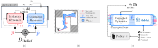

We measure the robustness of the agent against variation in dynamics/odometry parameters. Its sensitivity informs us about the agent's reliance on prediction and correction.
This plot reproduce figure 2 from the paper. Our goal is to measure how much the agent relies on prediction VS. correction to estimate its current pose, akin to a Kalman filter. To do so, we evaluate the agent's performance in different environments with corrupted dynamics / observations
Since environment parameters vary in scale and meaning, we use a distance to belief metric to unify their effects on agent performance. This metric measures the average spatial difference between agent positions in the corrupted and training environments over 1,000 five-second action sequences.